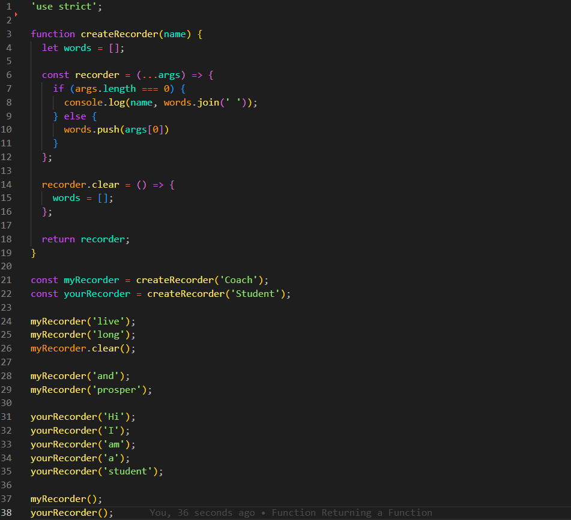
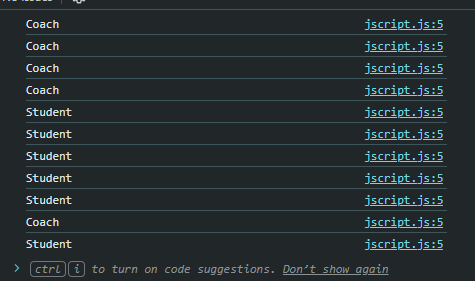
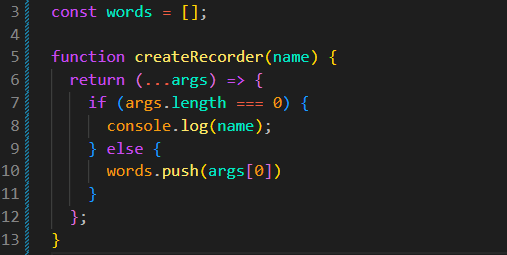
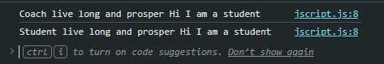

Function Returning a Function
Introdução
Agora iremos continuar explorando mais alguns exemplos de closure.
Agora iremos continuar explorando mais alguns exemplos de closure.
JS:

Uma analogia que podemos usar é a de uma fábrica que produz dispositivos. Cada dispositivo terá seu próprio nome e funcionamento independente.
Para isso, iremos criar uma função chamada createRecorder(name), recebendo name como parâmetro.
function createRecorder(name) {
}
Feito isso, iremos criar dois gravadores: um para nós, myRecorder = createRecorder('Coach');, e outro para um estudante, yourRecorder = createRecorder('Student');. Cada gravador deverá guardar suas próprias palavras.
Podemos chamar os gravadores da seguinte forma:
myRecorder('live');
myRecorder('long');
myRecorder('and');
myRecorder('prosper');
yourRecorder('Hi');
yourRecorder('I');
yourRecorder('am');
yourRecorder('a');
yourRecorder('student');
No momento, nossa função ainda não faz nada, pois precisamos criar a função que será retornada por createRecorder(name).
Iremos começar criando uma arrow function como retorno:
function createRecorder(name) {
return () => {
console.log(name);
};
}
Agora, quando chamamos o gravador, ele imprime o nome recebido pela função. Isso acontece porque a função retornada mantém acesso ao parâmetro name, mesmo depois que createRecorder termina sua execução.

Podemos alterar esse comportamento usando o rest parameter (...args). Ele permite receber vários argumentos e armazená-los em um array chamado args.
function createRecorder(name) {
return (...args) => {
if (args.length === 0) {
console.log(name);
}
};
}
A condicional args.length === 0 verifica se nenhum argumento foi passado. Se isso acontecer, iremos imprimir o nome do gravador.
Caso algum argumento seja passado, iremos armazenar a palavra em um array. Para isso, criaremos const words = [];.
const words = [];
function createRecorder(name) {
return (...args) => {
if (args.length === 0) {
console.log(name);
} else {
words.push(args[0]);
}
};
}

Ainda não teremos o resultado final. Agora queremos que, ao chamar o gravador sem argumentos, todas as palavras sejam impressas juntas, separadas por um espaço.
Para isso, usaremos o método join, que transforma os elementos de um array em uma string, utilizando o separador informado.
function createRecorder(name) {
return (...args) => {
if (args.length === 0) {
console.log(name, words.join(' '));
} else {
words.push(args[0]);
}
};
}
Agora, ao chamar o gravador sem argumentos, veremos todas as palavras armazenadas em uma única string.

Como isso foi possível?
Até o momento, temos uma variável compartilhada no escopo global, sendo ela words = [];.
Isso significa que todos os gravadores utilizam o mesmo array. Portanto, as palavras de myRecorder e yourRecorder ficam misturadas.
Para resolver esse problema, iremos mover o array words para dentro da função createRecorder. Dessa forma, cada chamada criará seu próprio array, que será mantido pelo closure.
Assim, cada gravador terá suas próprias palavras e funcionará de forma independente.
Também podemos adicionar a funcionalidade de limpar o gravador. Para isso, iremos criar um método chamado clear(), que será utilizado assim:
myRecorder.clear();
No momento, isso ainda não funcionará, pois uma função não possui automaticamente um método chamado clear. Precisamos adicioná-lo.
Adicionando a Funcionalidade Clear
Para adicionar o método, iremos armazenar a função retornada em uma variável chamada recorder. Depois, poderemos adicionar propriedades ou métodos a essa função, pois funções em JavaScript também são objetos.
function createRecorder(name) {
const words = [];
const recorder = (...args) => {
if (args.length === 0) {
console.log(name, words.join(' '));
} else {
words.push(args[0]);
}
};
return recorder;
}
Agora podemos adicionar o método recorder.clear(). Ele deverá limpar o array words.
recorder.clear = () => {
words.length = 0;
};
Usamos words.length = 0 para remover todos os elementos do array. Não podemos fazer words = [], pois words foi declarada com const e não pode receber outra referência.
Por fim, precisamos retornar a função recorder depois de adicionar o método clear.
function createRecorder(name) {
let words = [];
const recorder = (...args) => {
if (args.length === 0) {
console.log(name, words.join(' '));
} else {
words.push(args[0]);
}
};
recorder.clear = () => {
words.length = 0;
};
return recorder;
}
Agora cada gravador possui seu próprio array de palavras, mantém acesso ao seu nome e também possui o método clear() para limpar suas palavras.
O closure permite que a função recorder continue acessando as variáveis name e words, mesmo depois que createRecorder termina sua execução.